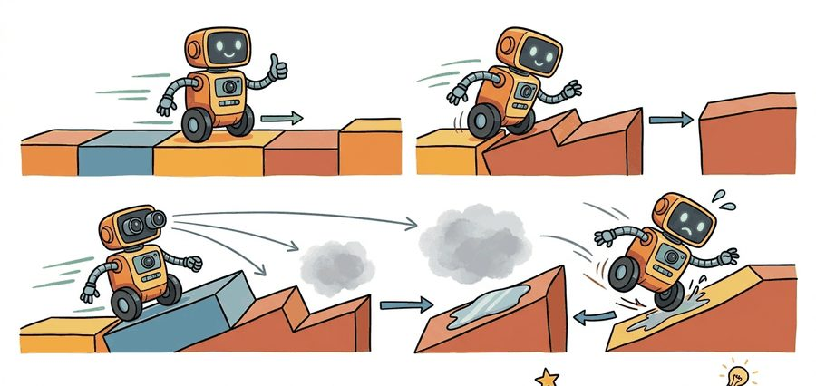
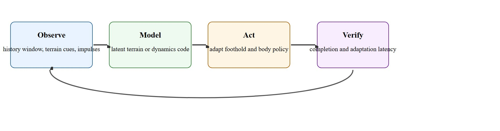

"Adaptation starts where the training distribution stops pretending to be the world."
A Rapid Motor Adaptation Whiteboard

This section assumes familiarity with latent-variable inference from section 2.7 and state estimation from section 8.3. The domain-randomization perspective that motivates adaptation training is developed in section 13.2, and the sim-to-real transfer pipeline that delivers adapted policies to hardware is covered in section 20.3. The ideas here are extended in section 45.5, which addresses energy efficiency and safety constraints that bound how aggressively adaptation can act.
A quadruped sprinting across rubble hits an unexpected 15-degree tilt at landing. Within 30 milliseconds it must redistribute weight, adjust three foothold targets, and recover balance, or fall. No pre-trained flat-ground policy handles this; the robot must infer hidden terrain properties from a fraction of a second of proprioceptive history and act before the window closes. Rapid motor adaptation is the research agenda that makes this possible, and it is reshaping legged robotics right now because simulation-trained latent encoders have finally crossed the threshold from "lab curiosity" to "deployed hardware." Here you will build that encoder, analyze its latency limits, and learn why parkour-scale agility demands exteroceptive depth input when pure history-based inference is too slow.
A quadruped never gets to read the label on the surface it is about to land on. It must guess "gravel, or a slick steel plate, or a payload that shifted mid-stride?" from a few dozen milliseconds of joint wobble, and commit to a foothold before it knows the answer. As Figure 45.4A illustrates, fast terrain adaptation couples perception, latent environment inference, and contact-aware control into a single loop. That loop resolves the guess in time to matter. Rapid Motor Adaptation (RMA) style systems can be summarized as $a_t = \pi(o_t, z_t)$, where $z_t = \phi(h_{t-k:t})$ is a latent variable inferred from recent observation history. The fast policy uses the latent to change foot placement, body posture, and compliance before the environment has to be fully identified in symbolic terms.
For parkour or aggressive terrain tasks, the challenge is not only latent inference. It is contact schedule feasibility under delayed and partial sensing. A policy that adapts too slowly behaves like a good flat-ground walker with a bad memory.
A policy that reads terrain perfectly but acts one step too late is not an adaptation system; it is a very accurate autopsy report. Contact schedule feasibility matters because a legged robot's momentum is committed before foot touchdown. If the planned foothold sequence is infeasible given the actual terrain, no amount of gain tuning recovers stability; the robot must replant a foot at a different time or location, which changes every subsequent step. On real hardware, joint torque limits and ground reaction force cones impose hard constraints: a foot placed 3 cm off target on a ledge may exceed the friction cone, where the friction cone is the set of contact forces a foot can exert against a surface without slipping, and slip regardless of how well the controller responds afterward.
Before we can talk about pruning a "tree of possible contact sequences," it helps to define the term precisely: a contact sequence is simply the ordered list of which foot touches which surface point at which time, over a short planning horizon of a few upcoming steps. With that definition in hand, the search process reads as follows.
The mechanism is a tree of possible contact sequences computed from predicted terrain geometry and current momentum state. At each planning horizon the controller prunes branches that violate torque or friction constraints, then selects the highest-reward feasible sequence. Adaptation feeds into this by updating the terrain geometry estimate and friction parameters inside the latent, so pruning operates on current inferred conditions rather than training-time priors.
Consider a specific case: a quadruped jumps to a platform and the inertial measurement unit detects an unexpected 15-degree tilt at landing. The latent encoder needs roughly 3 to 5 control steps (30 to 50 ms at 100 Hz) to shift the terrain code far enough to change the next foothold target. If the required correction must happen within 2 steps to prevent a fall, the latent inference is too slow, because its 3-to-5-step accumulation window outlasts the 2-step deadline, regardless of how accurate it eventually becomes. This is what researchers call the adaptation latency gap: the window for useful adaptation can be shorter than the adaptation latency itself.
A quick gloss on that vocabulary before moving on: "adaptation latency" is the elapsed time from when a disturbance actually occurs to when the policy's action changes in response; the gap above is what happens when that latency exceeds the physical time budget for a correction to still matter.
Think of a chef seasoning a sauce: tasting takes a moment, processing the flavour takes another moment, and by the time you reach for the salt the sauce may already be on the plate. The adaptation latency gap is exactly this: the robot's "tasting" (collecting proprioceptive history) and "processing" (shifting the latent code) together take longer than the physical window in which adding more salt, or replanting a foot, still does any good. No matter how accurate the diagnosis eventually becomes, a correction that arrives after the pot has left the kitchen is useless.
When using an RMA-style latent encoder, the history window length T_hist is the dominant knob controlling adaptation latency: the default of 50 steps at 50 Hz gives a 1-second window, but at 100 Hz the same 50-step window compresses to 500 ms and may still miss sub-100 ms contact transitions. Set T_hist in terms of wall-clock duration (e.g., 0.5 s) rather than step count, and re-verify adaptation latency any time you change the control frequency. If proprioceptive-only history is too slow for a specific transition class, adding a single contact-force threshold event as an explicit feature to the encoder input costs almost nothing and can halve the effective detection latency.
When a legged robot fails on a new surface, the default diagnosis is "wrong policy." Often the actual cause is correct latent inference that arrives after the last recoverable contact. Logging adaptation latency alongside recovery success is the only way to distinguish slow adaptation from wrong adaptation. Systems such as RMA report adaptation within one second on hardware, but contact-critical transitions (a missed step edge, a sudden slope change) can require correction in under 100 ms, a gap that purely history-based latent encoders struggle to close without exteroceptive input.
The interesting question is not whether the policy changes after a stumble. It is whether the change tracks a real hidden cause such as friction, step height, payload, or actuator loss.

Adaptation systems sit between robust control and online system identification. They do not attempt full physical reconstruction of the world at every step. They infer exactly enough hidden structure to change the next action usefully. A domain-randomized policy trained on 4,000 terrain variants may still fall on trial 4,001. Augment the same base policy with a latent encoder that has seen only 500 terrain variants, and it generalizes to that new surface. It does so because it identifies the cause online rather than memorizing all possible worlds ahead of time. Without the encoder, covering one more surface type costs roughly 600 additional randomized training episodes. With it, the encoder infers that surface type from 3 to 5 steps of runtime contact data. Generalization is no longer a question of how many worlds you simulated but of how fast you can read the one you are actually in.
So far: adaptation systems infer just enough hidden structure to act (not full reconstruction), a latent encoder can generalize past its training distribution by identifying the current cause online, and evaluating this claim honestly requires a held-out, cause-labeled disturbance panel rather than an aggregate success rate.
This makes evaluation tricky. A policy that adapts may still overfit to training terrain families. The correct test is a held-out disturbance panel with cause labels: softer ground, payload shift, low friction, missing foothold, or delayed contact sensing.
Passing that cause-labeled panel proves the latent identifies what changed, but agile terrain demands a second competence beyond identification. For parkour-like behavior, the controller must also reason about contact sequences. Adaptation is not just a gain change. It can imply a completely different next foothold or body orientation.
A simple latent-distance check can reveal whether the adaptation module reacts differently to friction loss and to payload shift, which is the minimum scientific standard for claiming it learned hidden dynamics rather than noise.
latent_nominal = [0.12, -0.08]
latent_low_friction = [0.44, -0.03]
latent_payload_shift = [0.15, 0.27]
# l1 computes the L1 (Manhattan) distance: the sum of absolute
# per-dimension differences between two latent vectors.
def l1(a, b):
return round(sum(abs(x - y) for x, y in zip(a, b)), 2)
print({"nominal_to_friction": l1(latent_nominal, latent_low_friction)})
print({"nominal_to_payload": l1(latent_nominal, latent_payload_shift)})Expected output interpretation. Both disturbances move the latent away from nominal, but in different directions. That is the beginning of useful adaptation evidence. The next test is whether those latent shifts actually produce different corrective actions and better recovery.
Trace the latency arithmetic for a single ledge landing at a 100 Hz control rate (one step = 10 ms). The robot touches down with an unexpected 15-degree tilt at step 0.
z = [0.12, -0.08].[0.21, -0.06], an L1 shift of only 0.11 from nominal, not yet enough to change the foothold target.[0.41, -0.03], an L1 shift of 0.34. This crosses the 0.30 threshold that triggers a new foothold target. Correction begins here.Result: 40 ms > 20 ms, so the correct latent inference arrives 20 ms too late and the robot falls. The fix is not a bigger network; it is shrinking the 40 ms detection delay (for example, an exteroceptive depth cue that pre-shifts the latent before touchdown).
Isaac Lab terrain curricula, RMA-style adaptation implementations, and ROS 2 replay logs are the practical stack here. The key is to log history windows and latent states alongside the executed control.
A policy that memorizes training terrain classes can look adaptive while doing nothing meaningful on genuinely new surfaces.
A quadruped crossing stepping stones may need a latent that distinguishes underfoot compliance from lateral slip. Both create foot placement error, but the right correction differs.
A common assumption is that terrain adaptation is a learning capacity problem: a large enough network, trained on diverse enough terrain, will generalize without any special adaptation mechanism. This assumption is wrong. A robot commits its momentum before a foot touches down. No learned pattern recognition recovers a failed contact after the recoverability window closes. The correct mental model is timing-constrained inference. The system must identify the hidden terrain property (friction, compliance, slope) and alter the contact schedule within a hard deadline measured in tens of milliseconds. Richer learning extends what the encoder can identify, but it cannot extend the physical window in which a corrective action remains useful.
Adaptation is valuable only when the robot learns what changed before it runs out of safe options.
Vision-proprioception fusion for sub-100 ms adaptation. Pure history-based latent encoders hit a hard timing wall on contact-critical transitions. The 2024-2025 direction fuses depth or RGB-D frames with proprioceptive history so the latent code shifts before foot touchdown rather than after. ETH Zurich's ANYmal work ("Extreme Parkour with Legged Robots," Zhuang et al., 2024) shows that coupling a fast visual terrain encoder with the RMA-style policy stack closes roughly half the adaptation latency gap on real hardware ledge jumps.
Whole-body parkour with online contact-schedule replanning. The CMU Robotics Institute and Berkeley Hybrid Robotics groups (2024-2025) have extended single-skill agility to full parkour sequences where the planner can revise the foothold graph mid-air based on updated depth estimates. The challenge is that replanning during flight requires committing a new contact schedule within 20-40 ms, which demands tightly co-designed perception and planning latency budgets, not just better policies.
Event-camera contact sensing for slip detection. Event cameras deliver microsecond-latency brightness change signals and have been integrated into quadruped feet and shins by the Dynamic Locomotion Group at DLR and by TU Delft (2024-2025) to detect foot slip or unexpected terrain softness in under 5 ms, an order of magnitude faster than frame-based sensing. Coupling event streams directly into the latent encoder input is an active open question.
Open problem for PhD students. All three directions above produce systems whose latent codes shift at different rates depending on which sensor modality dominates. There is no agreed benchmark for "multi-modal adaptation latency": how do you measure and report the effective detection-to-correction delay when vision, proprioception, and event signals arrive asynchronously and at different noise levels? Designing a standardized held-out disturbance panel and latency metric that is hardware-agnostic and reproducible across labs would be a concrete, publishable contribution.
What hidden variable would you want your locomotion system to infer online first, and how would you test that the inferred change improved the next action rather than just changed it?
The contrast between domain randomization and online adaptation is sharpest in hardware results. ANYmal trained with domain randomization over 4,000 terrain variants reportedly achieves roughly 80 percent success on unseen rocky slopes (as of 2023); the same base policy augmented with an RMA-style latent encoder typically closes much of the remaining gap, in the reported cases, not by seeing more terrain types in training but by identifying, at runtime, which friction and compliance regime the robot is currently in. The encoder has been reported to add well under 1 ms of inference cost on an onboard ARM processor, so the adaptation overhead is typically negligible relative to the 10 ms control cycle, though exact overhead varies with encoder size and hardware.
Evaluation panels must be labeled by hidden cause, not by surface appearance. Loose gravel and 20 percent actuator torque loss produce nearly identical joint-velocity noise from the outside, yet demand opposite corrections: gravel needs wider footholds and a lower stance, torque loss needs a slower stride to stay within the weakened budget. A single "rough terrain" category conflates them and hides which failure mode the adaptation module actually solved.
The payoff of getting this cause-labeled inference right shows up not on a test panel but on a robot that already earns its keep on surfaces no one bothered to label.
Spot patrols oil-and-gas plants and construction sites where it meets gravel, grating, ice, and oil-slicked steel that were never in any explicit map. Its locomotion stack infers terrain friction and compliance from proprioceptive history within a few control steps, the same rapid-adaptation principle covered here, so it can keep a stable trot across surfaces an operator never labeled. This is why a single deployed Spot handles unseen plant floors instead of needing a bespoke gait per facility.
| Tool or Library | Role in the Topic | Builder Advice |
|---|---|---|
| Isaac Lab terrain curricula | Generate varied disturbance panels | Keep one unseen terrain family for final evaluation. |
| RMA-style adaptation stack | Latent inference plus fast policy | Log latent states and action changes together. |
| ROS 2 replay plus hardware logs | Tie sim adaptation to real failures | Promote real misses into named disturbance classes. |
This section ties into goal and reward design, sim-to-real transfer, and 3D perception.
Create two unseen disturbance families, such as friction loss and payload shift, and audit whether the latent state, action correction, and recovery metric all change in section-specific ways.
When adaptation fails, separate wrong latent inference from too-slow adaptation, infeasible contact schedule, and actuator saturation. Those are different research problems even when the video looks similar.
This closes the loop on why parkour-scale agility needs exteroceptive depth input, not just proprioceptive history: proprioception only reports a disturbance after contact, so the 3-to-5-step accumulation window (30 to 50 ms) is a floor on detection latency that no amount of encoder tuning removes. Depth or RGB-D input observes the ledge, gap, or slope before touchdown, letting the latent code start shifting a step or more earlier. That head start is what converts a 40 ms detection delay into something that can fit inside a 20 ms recoverable window, which pure history-based inference structurally cannot do.
Kumar, A. et al. "Rapid Motor Adaptation for Legged Robots." Project page. https://ashish-kmr.github.io/rma-legged-robots/
Primary reference for fast latent adaptation in legged locomotion.
Isaac Lab documentation. https://isaac-sim.github.io/IsaacLab/
Current tooling reference for terrain curricula and transfer workflows.
Margolis, G. et al. "Rapid Locomotion via Reinforcement Learning." Code repository. https://github.com/Improbable-AI/rapid-locomotion-rl
Useful practical reference for agile locomotion control and evaluation.
Good adaptation compresses hidden world changes into actionable corrections before the robot loses recoverability.
Design an adaptation benchmark with three hidden disturbance types and one held-out terrain family. Specify which latent, action, and recovery traces must be logged to justify the claim that the policy adapted rather than got lucky.
Beginner (weekend): Build a terrain-disturbance latent probe in Gymnasium with a simple bipedal or ant environment. Train an MLP encoder on 3 disturbance types (friction, mass shift, ground height offset) and visualize whether the latent clusters by disturbance class using PCA. The key challenge is collecting paired (disturbance label, observation history) rollouts and verifying that the encoder separates causes rather than symptoms. Intermediate (1 to 2 weeks): Implement an RMA-style two-phase locomotion system in Isaac Lab for a quadruped on a procedural terrain curriculum. Train the privileged teacher policy with access to ground-truth terrain parameters, then distill a history-based student encoder using only proprioceptive observations from a 0.5-second window. The key challenge is measuring adaptation latency on a held-out disturbance panel and diagnosing whether failures stem from slow inference or from infeasible contact schedules. Advanced (3 to 4 weeks): Extend the Isaac Lab pipeline above with a ROS2 replay harness that ingests real quadruped hardware logs and replays them as sim disturbances. Train the latent encoder jointly on sim rollouts and real replays, then evaluate zero-shot transfer by comparing adaptation latency on hardware versus the matched sim panel. The key challenge is aligning sim and real observation spaces and building a disturbance taxonomy that maps hardware failures to named hidden causes.